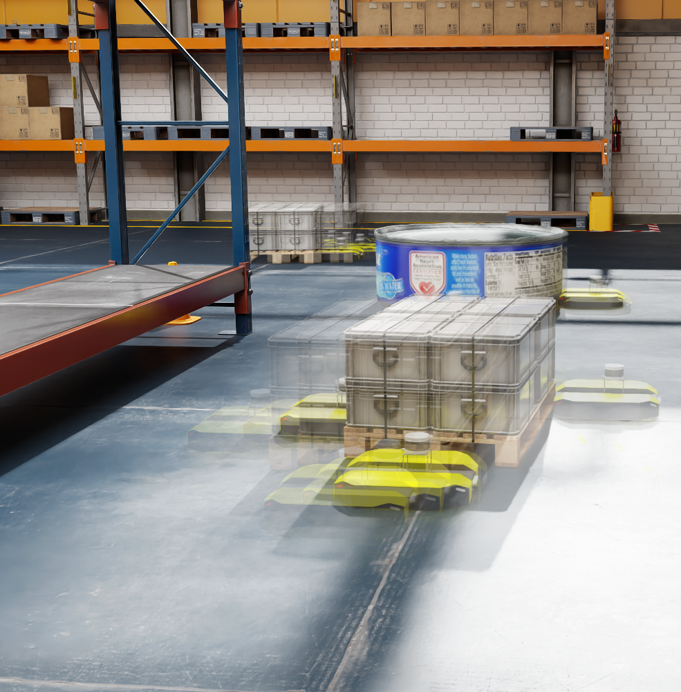

Collaborative
Our approach enables collaboration between multiple robots for manipulating multiple objects. GCo handles scenarios where the number of objects is greater than the number of robots and vice versa.
Co-generates discrete contact points and continuous manipulation trajectories.
Co-generates continuous contact formations and continuous manipulation trajectories.
Generates only an unconstrained continuous trajectory. The first configuration of the trajectory is treated as the contact point.
Note: In these animations of GCo-DC and GCo-CC, trajectories are translated to begin at the contact points for visualization purposes. In practice, trajectories are generated with their initial configurations being the origin.
 Our flow-matching co-generation framework addresses the fundamental challenge of jointly reasoning about contact formation and manipulation trajectories. The model takes visual observations of the environment, a robot budget, and a required transformation for the observed object, and co-generates discrete contact points alongside continuous manipulation trajectories. This dual representation ties contact planning to the perceptual space, avoiding reasoning over large continuous spaces unnecessarily, while maintaining flexibility for generating smooth manipulation trajectories.
Our flow-matching co-generation framework addresses the fundamental challenge of jointly reasoning about contact formation and manipulation trajectories. The model takes visual observations of the environment, a robot budget, and a required transformation for the observed object, and co-generates discrete contact points alongside continuous manipulation trajectories. This dual representation ties contact planning to the perceptual space, avoiding reasoning over large continuous spaces unnecessarily, while maintaining flexibility for generating smooth manipulation trajectories.
Our approach enables collaboration between multiple robots for manipulating multiple objects. GCo handles scenarios where the number of objects is greater than the number of robots and vice versa.

The framework can handle long-horizon manipulation tasks in complex, cluttered environments. GC0 does so by learning the portions that are hard to model with flow-matching co-generation, and planning those that can be modeled well (object and robot non-interacting motions) with scalable motion planning.
Coordinating a team of robots to reposition multiple objects in cluttered environments requires reasoning jointly about where robots should establish contact, how to manipulate objects once contact is made, and how to navigate safely and efficiently at scale. Prior approaches typically fall into two extremes--either learning the entire task or relying on privileged information and hand-designed planners--both of which struggle to handle diverse objects in long-horizon tasks. To address these challenges, we present a unified framework for collaborative multi-robot, multi-object non-prehensile manipulation that integrates flow-matching co-generation with anonymous multi-robot motion planning. Within this framework, a generative model co-generates contact formations and manipulation trajectories from visual observations, while a novel motion planner conveys robots at scale. Crucially, the same planner also supports coordination at the object level, assigning manipulated objects to larger target structures and thereby unifying robot- and object-level reasoning within a single algorithmic framework. Experiments in challenging simulated environments demonstrate that our approach outperforms baselines in both motion planning and manipulation tasks, highlighting the benefits of generative co-design and integrated planning for scaling collaborative manipulation to complex multi-agent, multi-object settings.